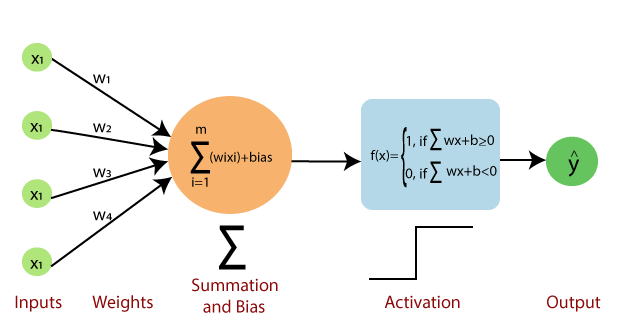
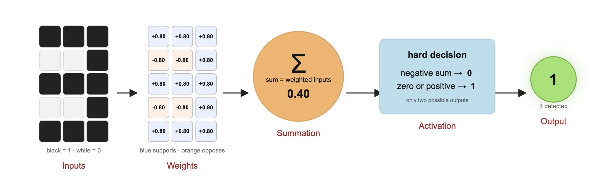
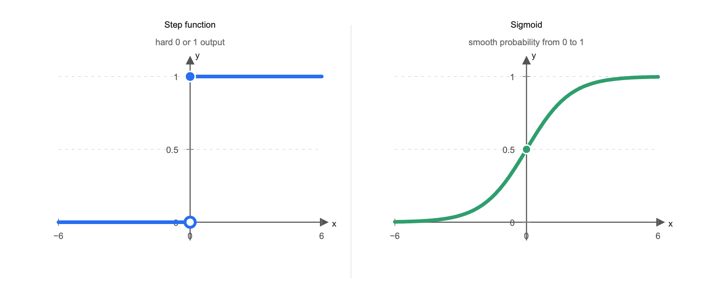
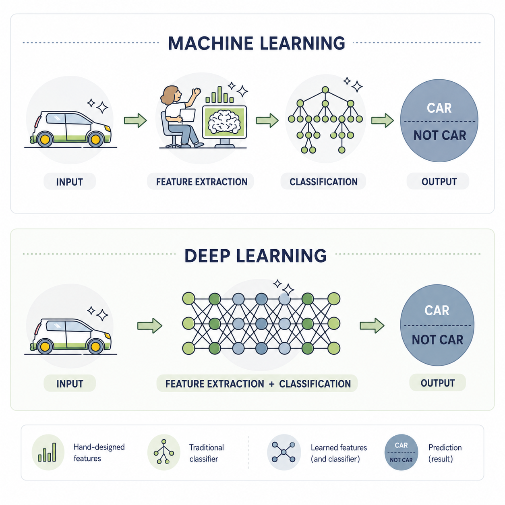
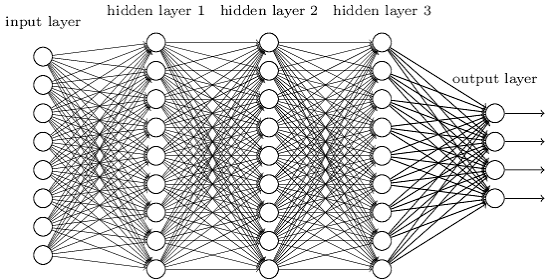
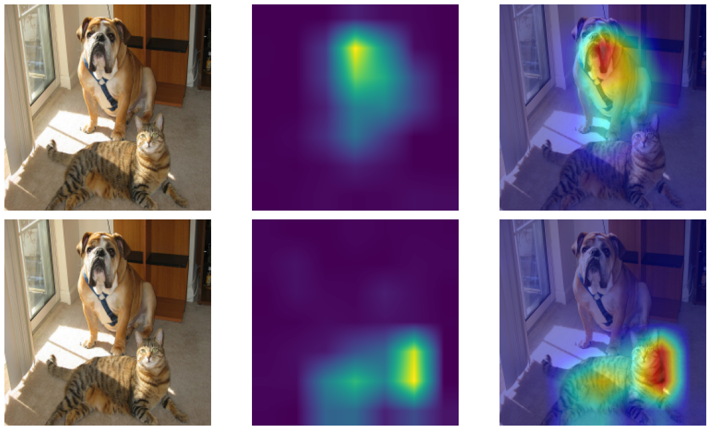
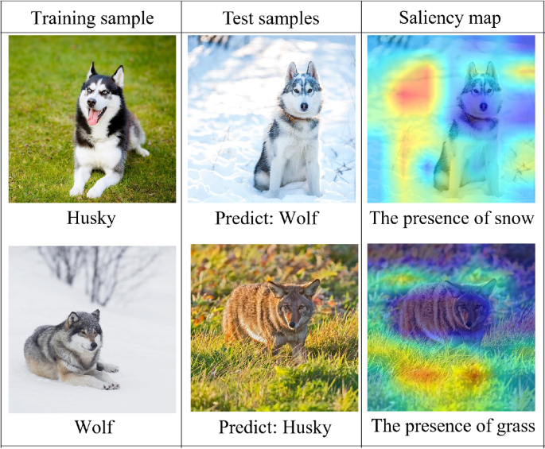
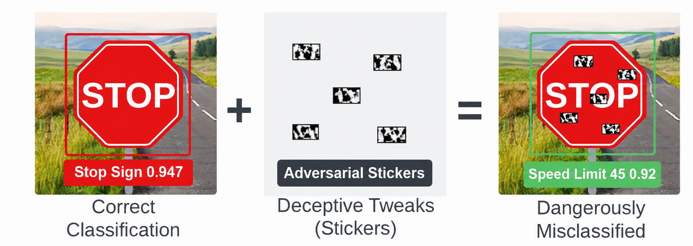
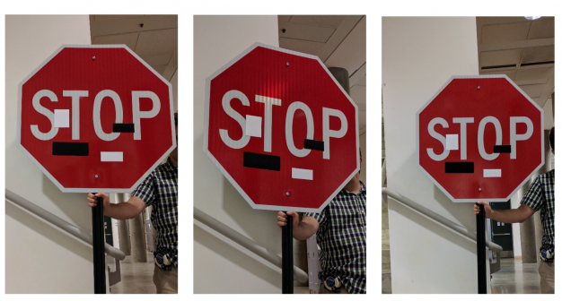

SCIENCES PO
INTRODUCTORY AI COURSE · SESSION 3
Deep Neural Networks
From simple neurons to complex structures
PRESENTED BY
Evan Dufraisse
9 August 2026

DEEP NEURAL NETWORKS
SESSION 3
CENTRAL QUESTION
Central Question
How do simple artificial neurons combine and learn to recognize increasingly complex patterns?
DEEP NEURAL NETWORKS
SESSION 3
What are Neural-Networks?

By Prof. Loc Vu-Quoc

A Biological Neuron
The Perceptron (1957)
DEEP NEURAL NETWORKS
SESSION 3
The Biological Neuron
By Prof. Loc Vu-Quoc
A Biological Neuron
Informatics is the automated processing of data.
How it works
A biological neuron combines incoming signals from other neurons and, if their combined effect exceeds a threshold, fires an electrical signal.
How it learns
Biological learning partly relies on synaptic plasticity: connections that repeatedly contribute to a neuron’s firing at the right time are strengthened, while others may weaken.
DEEP NEURAL NETWORKS
SESSION 3
The Perceptron (Rosenblatt 1957)
An Artificial Neuron
Informatics is the automated processing of data.
How it works
A perceptron combines weighted inputs and, if their sum exceeds a threshold, produces an output.
How it learns
A perceptron learns by adjusting its weights when its prediction is wrong, strengthening or weakening the influence of each input.
DEEP NEURAL NETWORKS
SESSION 3
Neurons as Pattern Detectors
By Prof. Loc Vu-Quoc
A Biological Neuron
The Perceptron (1957)
DEEP NEURAL NETWORKS
SESSION 3
A Neuron as a Digit Detector
One neuron can learn can be seen as
a simple pattern detector.

DEEP NEURAL NETWORKS
SESSION 3
A Neuron as a Digit Detector – Binary Detector
One neuron can learn can be seen as
a simple pattern detector.
DEEP NEURAL NETWORKS
SESSION 3
Binary Detector vs. Continuous Detector

DEEP NEURAL NETWORKS
SESSION 3
A Neuron as a Digit Detector – Continuous Detector
One neuron can learn can be seen as
a simple pattern detector.
DEEP NEURAL NETWORKS
SESSION 3
A Neuron as a Digit Detector – Probability Detector
DEEP NEURAL NETWORKS
SESSION 3
A Layer of Neurons
DEEP NEURAL NETWORKS
SESSION 3
Neurons Organized into Layers
DEEP NEURAL NETWORKS
SESSION 3
From Feature-Engineering to End-to-End models

Informatics is the automated processing of data.
End-to-End Model
An end-to-end model learns to transform raw inputs directly into the desired outputs, without relying on manually designed intermediate steps.
DEEP NEURAL NETWORKS
SESSION 3
Learning a Deep Neural Network
Forward Pass
Backward Pass
Update of Parameters
DEEP NEURAL NETWORKS
SESSION 3
Neurons Organized into Layers
DEEP NEURAL NETWORKS
SESSION 3
The Same Network, Without Knowing What Its Neurons Do
DEEP NEURAL NETWORKS
SESSION 3
Why neural networks are hard to explain
THE BLACK-BOX PROBLEM
A neural network’s weights do not form a readable set of rules. Inspecting them tells us little about what the network has learned.
Three aspects we’d like to answer:
1
Understanding
What detected patterns predict the answer
2
Reliability
When and why the model might fail
3
Bias
Has it learned a shortcut or stereotype?

DEEP NEURAL NETWORKS
SESSION 3
Why neural networks are hard to explain
THE BLACK-BOX PROBLEM
A neural network’s weights do not form a readable set of rules. Inspecting them tells us little about what the network has learned.
Three aspects we’d like to answer:
1
Understanding
What detected patterns predict the answer
2
Reliability
When and why the model might fail
3
Bias
Has it learned a shortcut or stereotype?
Some methods can help!
DEEP NEURAL NETWORKS
SESSION 3
What Makes a Neuron Respond?
DEEP NEURAL NETWORKS
SESSION 3
As we stack neuron layers, we can learn higher-level, more abstract features.
Deeper Layers Learn More Abstract Features
GoogLeNet / Inception v1
(2014)
13.4M parameters
DEEP NEURAL NETWORKS
SESSION 3
Beyond Individual Neurons: Explaining the Network’s Output
Inspired from R.Selvaraju, Grad-CAM: Visual Explanations from Deep Networks via Gradient-based Localization (2014)
DEEP NEURAL NETWORKS
SESSION 3
From prediction to explanation
Saliency maps highlight the pixels that most influence each class score.
INPUT
SALIENCY
OVERLAY
PREDICTION 01
DOG
Evidence centers on the dog.
PREDICTION 02
CAT
Evidence shifts to the cat.

DEEP NEURAL NETWORKS
SESSION 3
A background swap exposes the shortcut
Changing only the setting flips both predictions.

TEST RESULT
The animal stays the same.
The label changes.
1
Husky on snow
PREDICTED WOLF
2
Wolf on grass
PREDICTED HUSKY
A strong clue that background—not anatomy—is driving the answer.
DEEP NEURAL NETWORKS
SESSION 3
Saliency maps reveal the learned shortcut
The most influential pixels cluster around snow and grass—not only the animal.
WHAT THE MAPS REVEAL
SNOW
activates the wolf prediction
GRASS
activates the husky prediction
The classifier learned a shortcut:
background texture became a proxy for the animal class.
DEEP NEURAL NETWORKS
SESSION 3
Small changes can trigger dangerous errors
Adversarial stickers alter the model’s evidence without changing what a person sees.

A tiny, targeted visual change can overturn a high-confidence prediction.
DEEP NEURAL NETWORKS
SESSION 3
The attack works in the real world
The same sticker pattern fooled the classifier across viewing angles and distances.
THREE VIEWS OF THE SAME MODIFIED SIGN

Eykholt et al. (2018)
WHAT CHANGED
Small black-and-white stickers were added to a real stop sign.
MODEL OUTPUT
Stop sign → Speed Limit 45
WHY IT MATTERS
To people: harmless graffiti.
To the model: a different road sign.
DEEP NEURAL NETWORKS
SESSION 3
Wrapping-Up
Neural networks learn powerful patterns, but their black-box nature raise reliability challenges
REPRESENTATIONS
EXPLAINABILITY & RISK
A NEURON IS A PATTERN DETECTOR
Weighted inputs, a bias and an activation turn signals into a response.
LAYERS BUILD ABSTRACTIONS
Early layers detect simple features; deeper layers combine them into richer concepts.
END-TO-END MODELS LEARN FEATURES
Deep networks can replace hand-crafted features with learned representations.
ACCURACY DOES NOT EXPLAIN A MODEL
A prediction can be correct without revealing why it was produced.
EXPLANATIONS REVEAL SHORTCUTS
Saliency maps can expose reliance on background context instead of the intended signal.
SMALL CHANGES CAN BREAK PREDICTIONS
Adversarial examples reveal brittle, high-confidence behaviour.